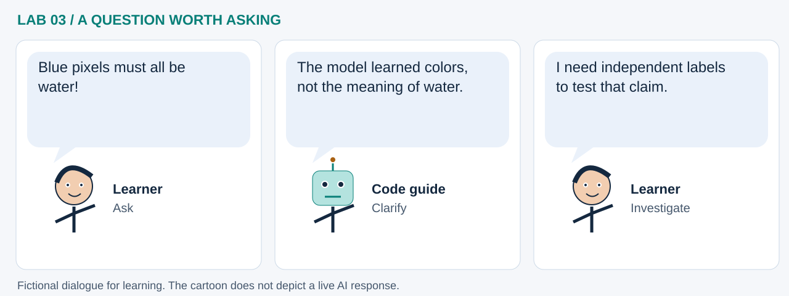

LAB 03 · 32-SECOND VISUAL WALKTHROUGH
Pixels become model features
Can a browser learn patterns from a small satellite image?
Silent, captioned storyboard. Use the player to pause, seek or change playback speed. On a small screen, use fullscreen or read the transcript below. The diagrams explain the method; they are not recordings of a live model run.
Download MP4 · Captions · Open infographic at full size

What runs here?
A small NASA JPEG is decoded and clustered in Pyodide. The separate Major TOM COG layers render in GeoLibre.
Browser machine learning: MiniBatch K-Means groups RGB appearance; no labeled land-cover model is trained.
Transcript and code landmarks
- 00–08s · Fetch
A fixed date and bounding box anchor a compact image sample.
source_image.resize((128, 128)) - 08–16s · Reshape
Each pixel becomes a row with red, green and blue feature values.
rgb.reshape(-1, 3) - 16–24s · Learn
Six clusters describe color similarity, with arbitrary IDs.
model.fit_predict(pixels) - 24–32s · Map
Restore geographic position, then compare original image and grouped regions.
from_bounds(*BBOX, w, h)
The common misconception

Read the cartoon dialogue
- Blue pixels must all be water!
- The model learned colors, not the meaning of water.
- I need independent labels to test that claim.
Try explaining it
Can cloud and built surfaces land in the same bright cluster?
Check your reasoning
Yes. RGB similarity can combine different surface types; semantic labels require additional evidence.
Original educational illustrations and captions authored for this repository. See the notebook for data and software citations.